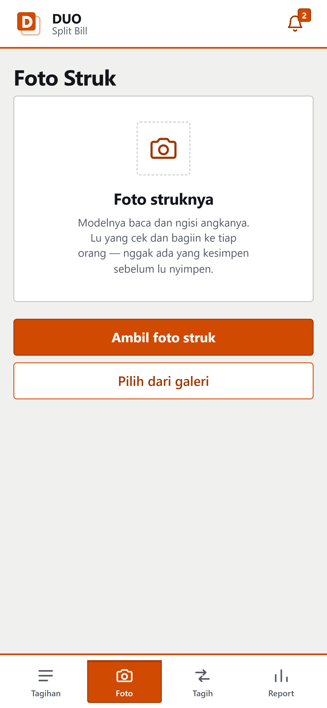
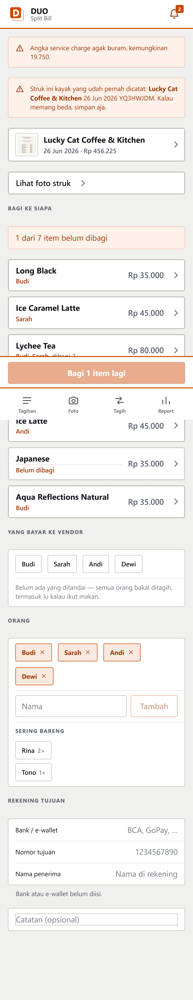
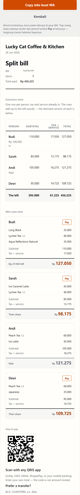
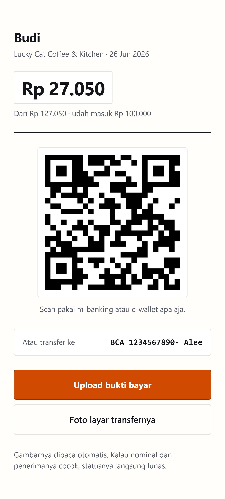
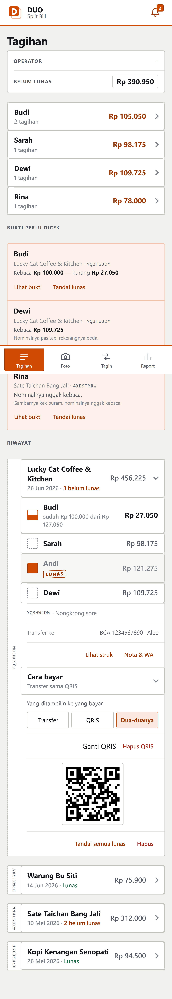
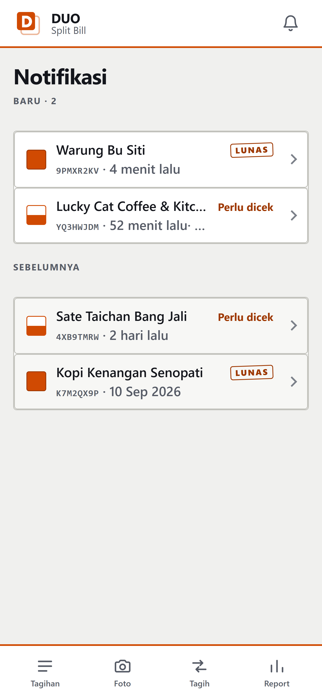

Buka splitfair.xyz, masuk pakai akun operator. Di iPhone: Share → Add to Home Screen. Di Android: menu → Install. Sekali doang.
Tab Foto → Ambil foto struk, atau pilih dari galeri. Modelnya baca angkanya dan ngisi; lu yang cek. Nggak ada yang kesimpen sebelum lu simpan.
Tambahin nama, tap tiap item, pilih siapa aja yang kebagian (bisa lebih dari satu). Saklar “PPN sudah termasuk” buat struk retail. Isi rekening tujuan, terus simpan.
Di Tagihan → Nota & WA → Copy teks buat WA. Satu pesan berisi ringkasan, bagian tiap orang, link nota, dan semua tombol bayar. Paste ke grup.
Tiap orang buka link-nya: nominal, rekening/QRIS, terus upload screenshot bukti transfer. Dibaca otomatis — pas langsung lunas, nggak pas masuk “perlu dicek”.
Sisa tagihan ada di Tagihan dan Tagih; bukti yang masuk ngumpul di lonceng Notifikasi. Kalau beres semua, rekap bulanannya ada di Report.






Tampilannya sengaja kayak formulir — ini arti tanda-tandanya.
Kotak putus-putusBelum lunas.
Setengah tercapSebagian, atau ada bukti yang perlu dicek.
Tercap penuhLunas.
Stempel LUNASDitulis di baris yang udah dibayar.
Tulisan orangeAda yang nunggu keputusan lu.
Angka orangeUang yang masih perlu dikejar.